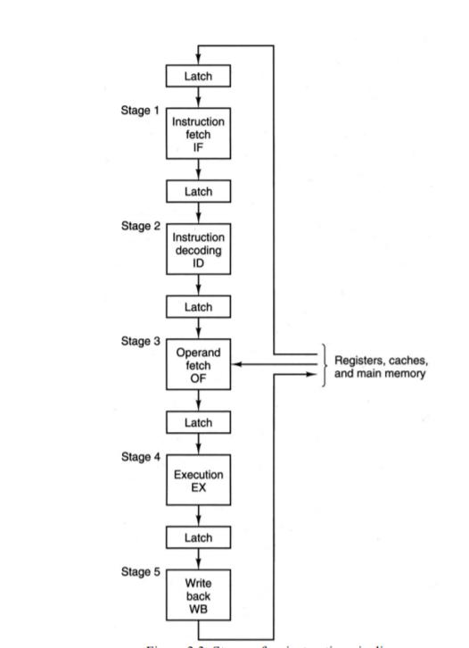
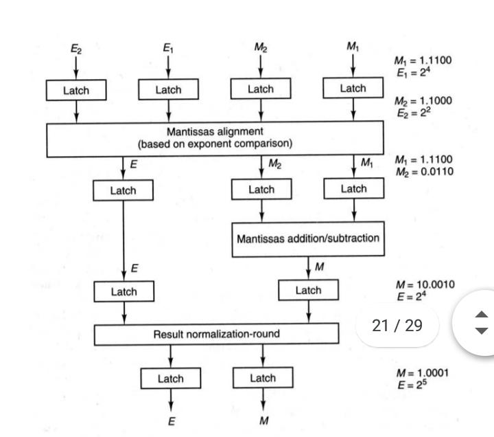

There of two type of pipelines
1.Instruction
2.Arithmetic
In a von Neumann architecture, the process of executing an instruction involves several steps. First, the control unit of a processor fetches the instruction from the cache (or from memory). Then the control unit decodes the instruction to determine the type of operation to be performed. When the operation requires operands, the control unit also determines the address of each operand and fetches them from cache (or memory). Next, the operation is performed on the operands and, finally, the result is stored in the specified location.
An instruction pipeline increases the performance of a processor by overlapping the processing of several different instructions. Often, this is done by dividing the instruction execution process into several stages. As shown in Figure 3.3, an instruction pipeline often consists of five stages, as follows:

An instruction pipeline overlaps the process of the preceding stages for different instructions to achieve a much lower total completion time, on average, for a series of instructions. As an example, consider Figure 3.4, which shows the execution of four instructions in an instruction pipeline. During the first cycle, or clock pulse, instruction i1 is fetched from memory. Within the second cycle, instruction i1 is decoded while instruction i2 is fetched. This process continues until all the instructions are executed. The last instruction finishes the write-back stage after the eighth clock cycle. Therefore, it takes 80 nanoseconds (ns) to complete execution of all the four instructions when assuming the clock period to be 10 ns. The total completion time can also be obtained using equation (3.1); that is,
Tpipe = m*P+(n-1)*P =5*10+(4-1)*10 =80 ns.
Note that in a nonpipelined design the completion time will be much higher. Using equation (3.2),
Tseq = n*m*P = 4*5*10 = 200 ns.
It is worth noting that a similar execution path will occur for an instruction whether a pipelined architecture is used or not; a pipeline simply takes advantage of these naturally occurring stages to improve processing efficiency. Henry Ford made the same connection when he realized that all cars were built in stages and invented the assembly line in the early 1900s. Some ideas have an enduring quality and can be apllied in many different ways! Even though pipelining speeds up the execution of instructions, it does pose potential problems. Some of these problems and possible solutions are discussed next.

Arithmetic pipelines are usually found in most of the computers. They are used for floating point operations, multiplication of fixed point numbers etc. For example: The input to the Floating Point Adder pipeline is:
X = A*2^a
Y = B*2^b
Here A and B are mantissas (significant digit of floating point numbers), while a and b are exponents.

The floating point addition and subtraction is done in 4 parts:
1.Compare the exponents.
2.Align the mantissas.
3.Add or subtract mantissas
4.Produce the result.
Registers are used for storing the intermediate results between the above operations.